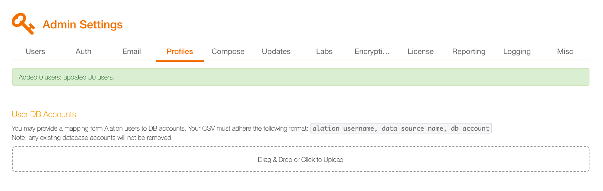

User Profiles Tab: Bulk User Account Creation¶
Alation Cloud Service Applies to Alation Cloud Service instances of Alation
Customer Managed Applies to customer-managed instances of Alation
In Alation, it is possible to bulk-create user accounts. This functionality is available to Server Admins on the User Profiles tab of the Admin Settings page. To bulk-load accounts, you will need a CSV file with user data that follows a specific format. If the data has non-ASCII characters, it should be encoded in UTF-8.
Some user upload capabilities depend on the Alation version:
In releases up to V R6 (5.10.x), new users loaded from the CSV file will be auto-assigned the Standard User role.
Starting with V R7 (5.12.x), you can specify roles in the CSV source file.
Note
If you have previously loaded a custom attribute named
role, note that it will be renamed toattribute_rolein V R7 to avoid confusion with the required attributerolethat is added in this release. Starting with V R7, use the built-in attributeroleto update roles using the CSV upload.Starting with 2021.1, the role attribute can only be used in the CSV file if role assignment using custom groups is turned off: Use Custom Groups to Assign User Roles.
Alation CSV Format for User Loading¶
Column |
Required? |
Value |
Description |
|---|---|---|---|
user |
Yes |
alphanumeric less than 30 characters unique across all rows |
Values in this column will be loaded as user names In versions before 2021.2, the number of characters in a username is limited to 30. From version 2021.2, the username character limit is increased to 150 characters*. |
display_name |
Yes |
alphanumeric |
Values will be loaded as users’ display names |
Yes |
Values will be loaded as users’ emails |
||
title |
Yes |
alphanumeric |
Values will be loaded as users’ titles |
role |
Yes |
alphanumeric |
available starting from V R7 (5.12.x). The role of the user:
|
password |
No |
alphanumeric |
This column can be included to set initial passwords for new users. It cannot be used to update passwords of existing users. Password is optional because users will log in with their corporate directory password. Alation does not store passwords in case it is integrated with LDAP or SAML providers. |
* From 2021.2, the username character limit is increased to 150 characters. The truncated usernames (more than 30 characters) will be automatically migrated. To disable the migration refer to Disable the Username Migration.
Example:
"user","display_name","email","title"
"John Doe","John the Curator","john.doe@alation.com","The Guru"
"Jane Doe","Jane the Steward","jane.doe@alation.com",""
Note
For LDAP or SAML authentication, a user account in Alation will only be created at the time people log in with their corporate credentials. However, a Server Admin may need to perform pre-configuration that involves user accounts before users start to log in. For example, Admins may need to set up Data Source managers in advance. This is where bulk-loading user accounts from a CSV file may come handy. Also, if accounts are pre-loaded, it will be possible for users to do @mentions in Conversations tagging those people who have not logged in yet.
Bulk-Creating User Accounts¶
In the Server Admin section of the Admin Settings page, the User Profiles link.
Follow the instructions on the page to prepare the CSV file. You can download a CSV with the currently existing user profiles as an example by clicking Download the current user profiles as a template:
{kind=link}
Upload the created CSV file using the Drag & Drop or Click to Upload widget. Alation will upload the file and validate its content. It will also do a diff of the values that changed. The profiles that match already existing users will have a link in the user column that will open the user’s profile. Existing values that are going to be overwritten by this upload will be highlighted in green:
Click Confirm to upload the CSV. User profiles will be uploaded to Alation:

{kind=link}
{kind=link}
User DB Accounts Mapping¶
Server Admins can map Alation user accounts onto users’ existing DB accounts. To do the mapping,
In the Server Admin section of the Admin Settings, click the User Profiles link.
Find the User DB Accounts section and follow the instructions on the page to map the accounts.